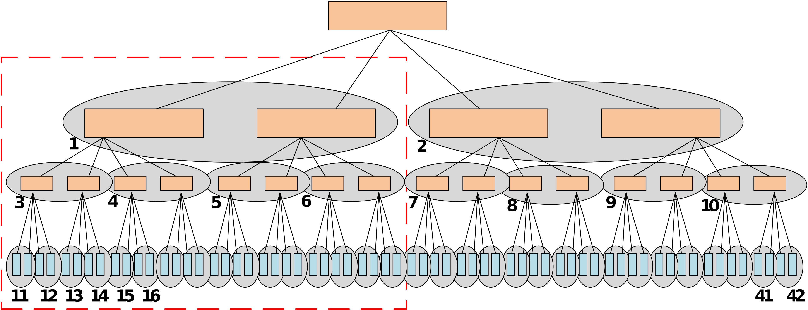

Our Projects


Motivation
Embedded systems have become an integral part of our lives, and hence it is essential that they are secure. However, the focus so far has been on the development of software tools (e.g., antivirus, antimalware, firewalls) to protect these systems from malicious software. The recent micro-architectural attacks, such as Meltdown and Spectre, which exploit hardware vulnerabilities of the computer system (i.e. speculative execution and cache leakages) have raised major concerns as they cannot be traced by the above-mentioned software tools. This along with other well-known micro-architectural attacks like side-channel and row-hammer attacks exploit the peculiar characteristic of the computer hardware components (cache and memory modules) that manifest under specific circumstances. Due to the proliferation of embedded systems, these attacks can lead to devastating security implications at a wide scale.
Our research focuses on protecting the confidentiality of the program and data when applications are deployed on edge devices. We investigate attacks that exploit side-channel leakages on edge devices, and develop frameworks for implementing applications securely on low-cost embedded computing systems in order to prevent program and data theft, while meeting the QoS performance, power, accuracy) requirements.
The following are some of our projects in this area:
Hybrid Program Obfuscation
Cryptographic schemes in computers can be deployed in unforeseen adversarial settings, where keys can be compromised through side-channel attacks. In such attacks, the adversary extracts secret information from a victim program by observing a physical phenomenon, e.g. execution time and power consumption, during its execution. Our solution combines 1) side-channel-aware code obfuscation with 2) dynamic hardware diversification, to protect against side-channel attacks and reverse engineering attacks.
Side-channel-aware code obfuscation is a compiler-driven method that performs program transformations on the original program to protect against reverse engineering while at the same time, ensuring low information leakage in the obfuscated codes and considering the execution time of a program. An optimization algorithm is used to determine the combination of program transformations that leads to solutions with the best obscurity-performance trade-offs, and low side-channel leakage.
Dynamic hardware diversification is achieved by using a compiler to automatically generate instructions in the security-critical segments of the program, which are executed on a co-processor. At runtime, the co-processor produces random (diversified) characteristics on each execution instance of the instructions. Unlike all the existing hardware obfuscation methods, the proposed hardware diversification does not require changes to the base processor architecture. The co-processor introduces negligible hardware and power overhead.
This research has been supported by the National Research Foundation, Singapore under grant number NRF2016NCR-NCR001-006.
Publications
- Alexander Fell, Hung Thinh Pham, Siew-Kei Lam, “TAD: Time Side-Channel Attack Defense of Obfuscated Source Code”, 24th Asia and South Pacific Design Automation Conference (ASP-DAC), January 2019 [Tokyo, Japan] [PDF]
- Thinh Hung Pham, Alexander Fell, Arnab Kumar Biswas, Siew-Kei Lam, and Nandeesha Veeranna, “CIDPro: Custom Instructions for Dynamic Program Diversification”, Field Programmable Logic and Applications (FPL), August 2018, [PDF]
Dynamically Skewed Memory Integrity Tree
Memory integrity trees are widely-used to protect external memories in embedded systems against replay, splicing and spoofing attacks. However, existing methods often result in high-performance overhead that is proportional to the height of the tree. Reducing the height of the integrity tree by increasing its arity, however, leads to frequent overflowing of the counters that are used for encryption in the tree.
We a memory authentication framework, called DISSECT, which utilizes a dynamic memory integrity tree that can adapt to the memory access patterns of the application by progressively adjusting the tree height and arity in order to significantly reduce performance overhead.
As illustrated below, this is achieved by 1) initializing an integrity tree structure with the largest arity possible to meet the security requirements, 2) dynamically skewing the tree such that the more frequently accessed memory locations are positioned closer to the tree root (overcomes the tree height problem), and 3) dynamically splitting the tree at nodes with counters that are about to overflow (overcomes the counter overflow problem).

This research has been supported by the Academic Research Fund (AcRF) Tier1, Ministry of Education, Singapore under grant number RG166/1.
Publications
- Saru Vig, Rohan Juneja, and Siew-Kei Lam, “DISSECT: Dynamic Skew-and-Split Tree for Memory Authentication”, Design, Automation and Test in Europe (DATE), March 2020 [PDF]
- Saru Vig, Rohan Juneja, Guiyuan Jiang, Siew-Kei Lam, and Changhai Ou, “A Framework for Fast Memory Authentication using Dynamically Skewed Integrity Tree”, IEEE Transactions on Very Large Scale Integration System, Vol. 27, No. 10, October 2019 [PDF]
- Saru Vig, Sarani Bhattacharya, Debdeep Mukhopadhyay and Siew-Kei Lam, “Rapid Detection of RowHammer Attacks using Dynamic Skewed Hash Tree", Hardware and Architectural Support for Security and Privacy (HASP@ISCA), June 2018 [PDF]
- Saru Vig, Guiyuan Jiang, and Siew-Kei Lam, “Dynamic Skewed Tree for Fast Memory Integrity Verification", Design, Automation and Test in Europe (DATE), March 2018, pp. 642-647 [PDF]
- Saru Vig, Tan Yng Tzer, Guiyuan Jiang, and Siew-Kei Lam, “Customizing Skewed Trees for Fast Memory Integrity Verification in Embedded Systems", IEEE Computer Society Annual Symposium on VLSI (ISVLSI), July 2017, pp. 213-218 [PDF]